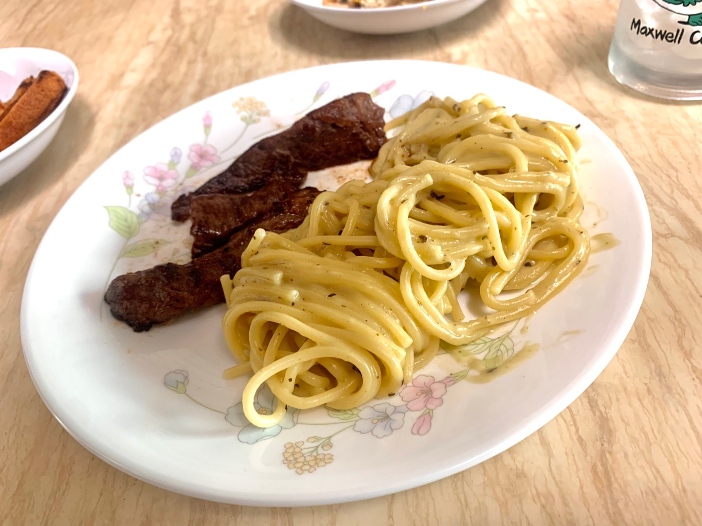

👈
스테이크와 크림파스타 레시피

스테이크 잘 굽는 법
[ 참고1: 레이먼킴의 인생고기🍖 ]
[ 참고2: 쇠고기 부위 ]
- 고기는 굽기 전 1시간 정도 상온에 꺼내두고 필요에 따라 정형합니다.
- 후추를 골고루 뿌려 밑간해줍니다.
- 기호에 따라 올리브오일을 뿌려주세요.
- 팬에 식용유를 두르고, 불을 살짝 낮춘 후 고기를 구워주세요.
- 고기를 올리고 소금을 눈처럼 많이 뿌려주세요.
- 한 면이 적당히 익을 때까지 (약 3분 정도) 충분히 기다립니다.
- 고기가 거의 익으면 불을 중불로 낮춰줍니다.
- 양쪽 면을 익힌 후 버터 조금과 으깬 마늘을 넣어주세요.
- 아로제하며 한 면당 3분 정도 구워주세요.
- 4~5분 충분히 레스팅해줍니다.
크림파스타 맛있게 만드는 법
[ 참고1: 백종원의 요리비책 ]
- 냄비에 물, 소금, 올리브유를 넣고 끓입니다.
- 물이 끓어오르면 면을 돌려서 펼쳐 넣고 붙지 않도록 저어주면서 약 6분 정도 삶습니다.
- 면수는 버리지 않고 스파게티면을 체에 밭쳐 건져냅니다.
- 프라이팬에 베이컨, 다진 양파, 다진 양송이 버섯, 올리브유를 넣고 중불에 볶습니다.
- 양파가 노릇해 질 때까지 충분히 볶은 후, 버터, 우유, 편 썰은 양송이 버섯, 스파게티 면을 순서대로 넣어 졸입니다.
- 불을 약 불로 줄인 후 꽃소금으로 간을 합니다.
- 밀가루를 넣고 잘 풀어 주어 농도 조절을 합니다. 이때 너무 되직하면 면수를 추가합니다.
- 불을 끄고 파르메산 치즈를 골고루 뿌려 섞고 후춧가루를 뿌려 접시에 담고 파슬리 가루를 뿌려 완성!
☝